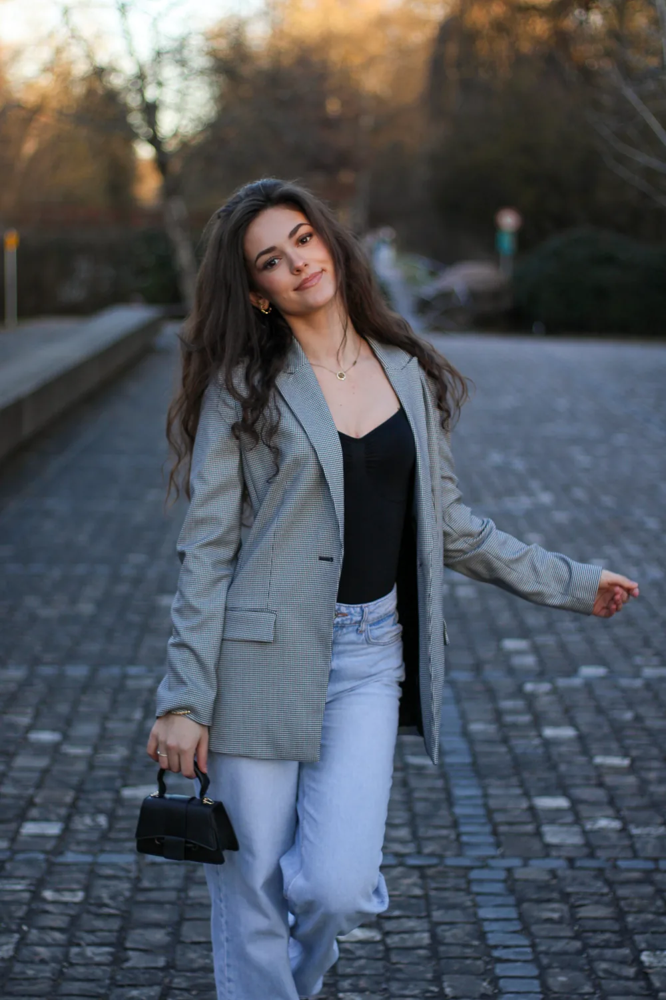
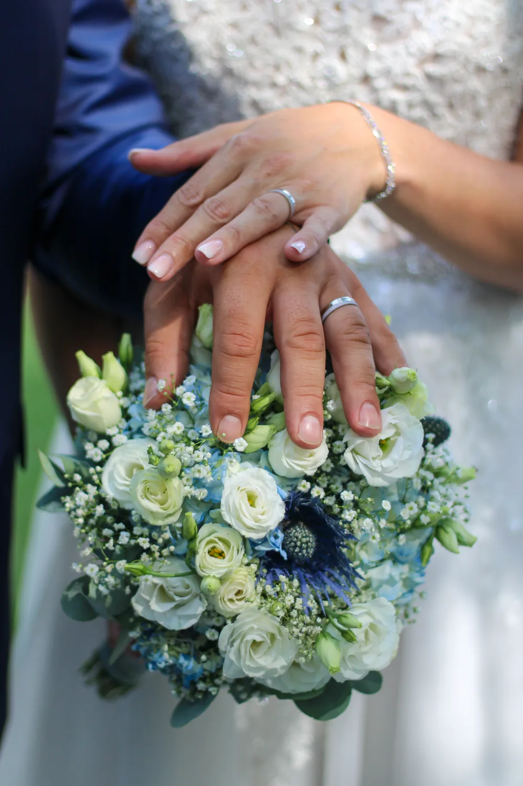
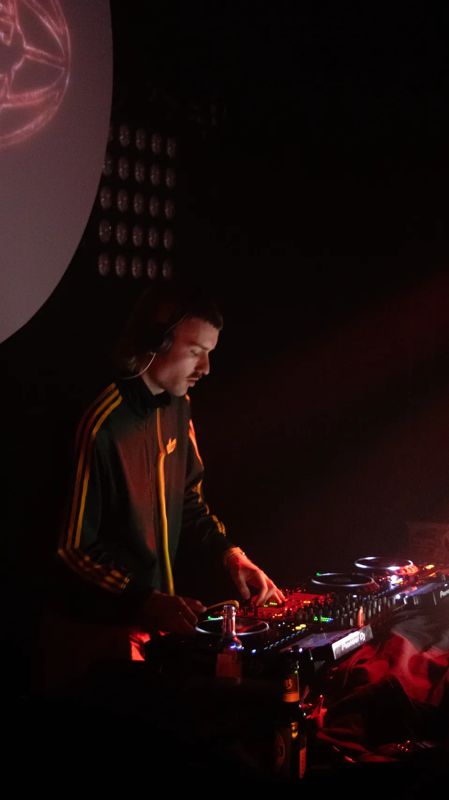
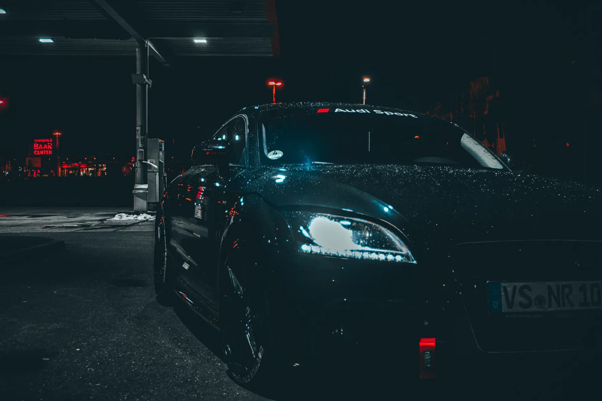
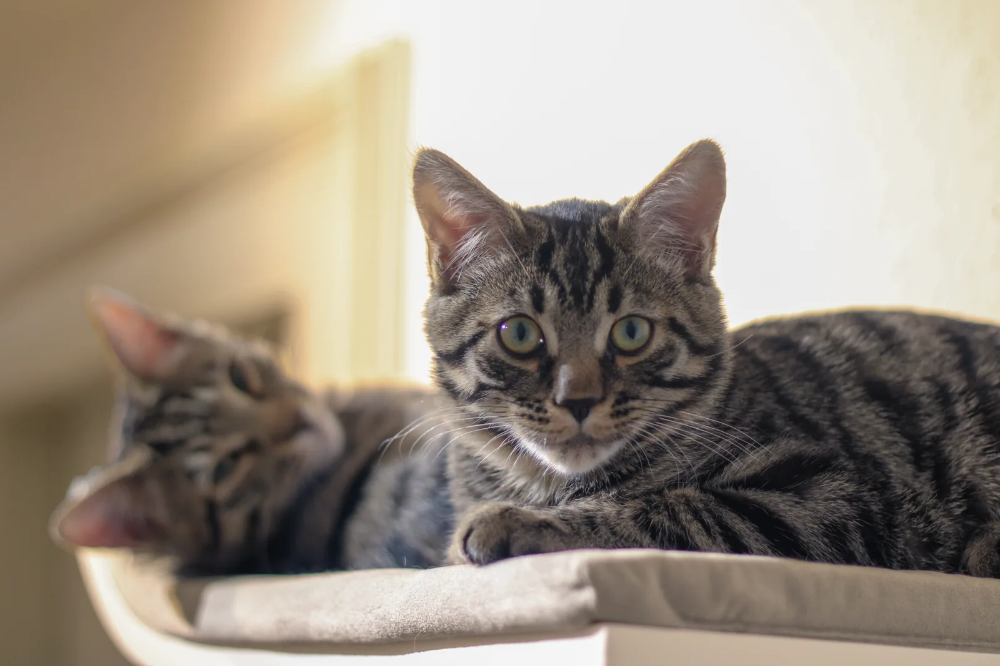

01
Portrait
Natürliche Portraits mit klaren Ausschnitten, ruhigem Licht und echter Nähe zur Person.
AnsehenFünf Kategorien mit klarer Bildsprache, eigener Stimmung und einer kuratierten Auswahl aus meinem Portfolio.

01
Natürliche Portraits mit klaren Ausschnitten, ruhigem Licht und echter Nähe zur Person.
Ansehen
02
Details, Begegnungen und echte Augenblicke, die einen Tag emotional und zeitlos festhalten.
Ansehen

04
Reduzierte Kompositionen, dunkle Flächen und Kontraste, die Form und Charakter sichtbar machen.
Ansehen
05
Ruhige Tierportraits mit Geduld, natürlichem Ausdruck und einer klaren, unaufgeregten Bildsprache.
AnsehenKategorie
Ruhige Portraits, klares Licht und natürliche Momente.